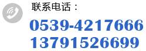

新闻中心
-
饮料生产线的维护要点有哪些

饮料生产线主要用来生产各种饮料产品，由于生产线上包含了很多不同设备，所以它们的...
[2017-06-15]
-
你了解桶装水和瓶装水的保质期吗
日常生产中矿泉水生产设备主要用于各种矿泉水、纯净水、酒类等不含饮料的生产。通过其...
[2017-05-25]
-
高端化将成为饮料机械设备发展的必经之路
我国饮料机械设备发展到今天，完全能够满足国内饮料生产厂家的需要。但与国外先进技术...
[2017-05-19]
-
生产饮料的设备多少钱
现如今人们对商品质量的要求日渐提高，市场需求也不断扩大，企业对高效自动化生产的要...
[2017-05-15]
-
饮料机械厂家未来的发展前景
食品行业往往是我国重点扶持的行业，目前大部分饮料机械厂家都是中小型的民营企...
[2017-05-10]
-
选购饮料机械设备时要注意两点
自从80年代我国改革开放以来，就已经有很多民营小企业开始从事饮料的加工和生产，那...
[2017-05-10]
-
激光喷码机的九大性能优势
目前的激光喷码机市场上产品较多，对产品外包装的喷码效果都各不相同，而且这种设备能...
[2017-04-19]
-
果汁饮料设备生产线原料预处理流程
不同的饮料生产工艺需要不同的饮料设备生产线，而我们常喝的果汁饮料同样也是根据不用...
[2017-03-28]
-
饮料机械设备装箱机的工作原理
饮料从原材料预备到生产再到出厂，这期间是需要经过很多工序的，自然少不了的就是各种...
[2017-03-14]
-
饮料设备工艺流程之啤酒过滤目的
夏季是饮料酒水类销售高峰，特别是啤酒的销量更是居高不下，更有各地“啤酒节”...
[2017-02-28]
40 条记录
1234 下一页
共 4 页
 | 网站地图
| 网站地图